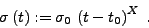

This simulator module produces Gaussian noise the standard deviation of which may vary in time according to a polynomial trend. A temporal correlation coefficient between consecutive data points , may be specified. In contrary to the serial correlation, the temporal correlation takes into account the width of the time interval between pairs of data points, which has implications on the noise behaviour of non-equidistantly sampled data. The serial correlation drops exponentially with the distance in time according to
The keyword sim:temporal is given with six floating-point parameters. They specify
|  | (26) |
If the lower and upper time limits are both set zero, the noise is generated for the entire time base.
Example. The sample project sim-temporal contains the simulation and analysis of temporally correlated noise. The sampling of the V photometry of IC4996#89 is used, and the simulator replaces the original observable values, according to the line
sim:replace
in the file sim-temporal.ini. The line
sim:temporal 0 0 1 0 0 0.01
specifies noise with a constant standard deviation of 1 and a temporal correlation coefficient of 0.01. Setting the first two parameters zero provides synthetic data for the entire time series. The resulting light curve is displayed in Fig.31. Comparing this light curve to the dataset generated in the project sim-serial (p. ), the correlation between consecutive data points is obviously much stronger in the present example. Using Eq.25with a typical sampling interval width of 9 min for the dataset under consideration, the temporal correlation coefficient of 0.01 corresponds to a serial correlation coefficient of
), the correlation between consecutive data points is obviously much stronger in the present example. Using Eq.25with a typical sampling interval width of 9 min for the dataset under consideration, the temporal correlation coefficient of 0.01 corresponds to a serial correlation coefficient of  0.97.
0.97.
The significance spectrum displayed in Fig.33 shows the same overall characteristics as the corresponding spectrum for serially correlated noise (Fig.32, but the sigs at low frequencies are considerably higher, which is a consequence of the strong serial correlation associated to this setup.


Next: Random steps
Up: The Built-in Simulator
Previous: Serially correlated noise
Contents
Piet Reegen
2009-09-23